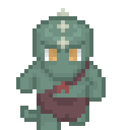
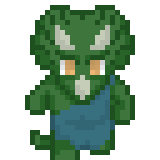
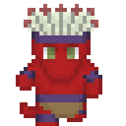
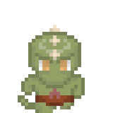

Sóis Esverdeados, o tipo mais comum do povo lagarto e o mais conhecido, vivem em pântanos e charcos, constroem vilas simples com cabanas feitas de barro e vegetação, são onívoros, mas preferem carne.
- Atributos+2 STR, +2 CON
- Tipo:Humanoid (Reptilian)
- Tamanho:Médio
- Movimento:9m, natação 9m
- Armadura Natural:+4
- Ataques Naturais:garras e mordida de 1d4, armas primarias
- Qualidades Especiais:
- Visão no Escuro: 18m
- Prender a Respiração: pode prender a respiração por uma quantidade de minutos igual o valor de CON

Sóis Antigos, são raros, vivem em selvas profundas no território de Krosa, e podem ser muito agressivos, vivem em pequenas unidades familiares como nômades, viajando de um campo de caça para o outro
- Atributos+6 STR, -2 DEX, +2 CON
- Tipo:Monstrous Humanoid (Reptilian)
- Tamanho:Large
- Movimento:9m
- Armadura Natural:depende da espécie
- Ataques Naturais: depende da espécie
- Tiranos:Mordida como arma primária, 1d8 de dano, Faro, +4 de armadura natural, +2 em testes de Survival e Intimidate, esta é sempre uma perícia de classe
- Cristados:Cone de dano sônico CON/dia, 1d6/4 níveis, CD baseada em CON, +2 em testes dePerception, ela é sempre considerada uma perícia de classe
- Três Chifres:Ataque de Chifres como Arma Primária, 1d8 de dano, +5 de Armadura Natural, Faro
- Blindados:Ataque de Cauda como arma primária (Clava ou Espinhos), 1d8 de dano, +7 de Armadura Natural, +2 em testes dePerception, ela é sempre considerada uma perícia de classe
- Espécies:

Os Sóis Vermelhos, são caçadores dos penhascos do deserto de Catarna
- Atributos:+2 DEX, +2 CON
- Tipo:Humanoid (reptilian)
- Tamanho:Médio
- Movimento:15m
- Armadura Natural:+2
- Ataques Naturais:Garras e Mordida primárias de 1d4
- Qualidades Especiais:
- Caçador veloz:+2 de Acrobatics e Survival, elas são consideradas perícias de classe
- Salto Prodigioso:Recebe um bônus de +4 em testes de Acrobatics para Saltar pode fazer dois ataques com as garras ao final de um salto durante uma investida

Veneno Sombrio, são menores que os outros, vivem em regiões de matagal, embora possam ser ocasionalmente encontrados em florestas, vivem em pequenos grupos, são sempre carnívoros e tem um estilo de vida nômade
- Atributos:+2 DEX, +2 CON
- Tipo:Humanoid (reptilian)
- Tamanho:Pequeno
- Movimento:12m
- Armadura Natural:+2
- Ataques Naturais:Garras e Mordidas primárias de 1d3
- Qualidades Especiais:
- Caçador Furtivo:+2 de Stealth e Survival, elas são consideradas perícias de classe
- Pele Camaleônica: Quando está parado, recebe um bônus adicional de +4 em testes de Stealth
- Visão no escuro:18m

Sobekai, São encontrados quase que exclusivamente ao redor da Grande Pirâmide de Athankepesh, foram criados por Sobek, o Deus guardião e vivem para servir e proteger, são exclusivamente carnívoros.
- Atributos+4 STR,- 2 DEX, +2 CON
- Tipo:Monstrous Humanoid (Reptilian)
- Tamanho:Large
- Movimento:6m, não é afetado pela carga ou armadura, natação 9m
- Armadura Natural:+4
- Ataques Naturais:garras e mordida de 1d4, armas primarias, cauda como arma secundária de 1d8
- Qualidades Especiais:
- Prender a Respiração: pode prender a respiração por uma quantidade de minutos igual o valor de CON
- Guardião:+2 de bônus em Perception, esta é sempre uma perícia de Classe
- Usar armas:Sabe usar Alabardas e Cimitarras